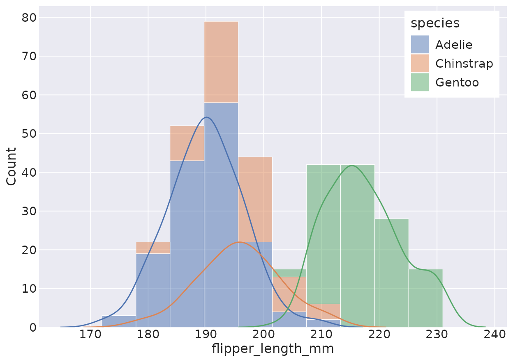
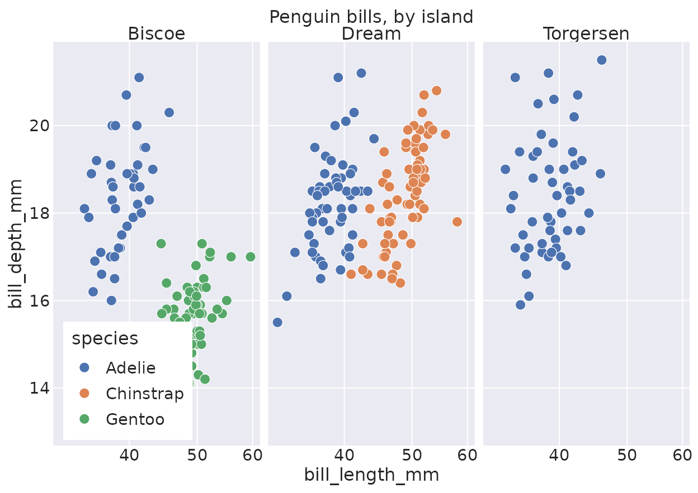

reaborn is an R port of Python’s seaborn, built on ggplot2. It mirrors seaborn’s
function API exactly and renders visually indistinguishable plots — and
because every result is a real ggplot, you can keep
extending it with the grammar of graphics.
Install
install.packages("reaborn")Or install the development version from GitHub:
# install.packages("remotes")
remotes::install_github("shawntz/reaborn")One import sets the scene
Attaching reaborn does three things, mirroring
import seaborn as sns followed by
sns.set_theme():
- It sets the seaborn theme and palette globally, so every plot inherits the familiar seaborn look.
- It exposes
sns.-prefixed aliases for every function, so pasted Python runs verbatim. - It binds the Python literals
True,False, andNoneto R’sTRUE,FALSE, andNULL.
Your first plot
Load one of seaborn’s example datasets and make a plot. This is
literally seaborn syntax — string column names, named arguments, the
sns. prefix:
penguins <- load_dataset("penguins")
sns.scatterplot(data = penguins, x = "bill_length_mm", y = "bill_depth_mm",
hue = "species")
Prefer idiomatic R? Drop the sns. prefix — the bare
names work too:
histplot(data = penguins, x = "flipper_length_mm", hue = "species",
multiple = "stack", kde = TRUE)
Every plot is a ggplot
This is reaborn’s superpower over seaborn. A plotting call returns a
ggplot object, so you can layer on facets, scales, themes,
and extra geoms:
scatterplot(data = penguins, x = "bill_length_mm", y = "bill_depth_mm", hue = "species") +
ggplot2::facet_wrap(~island) +
ggplot2::scale_x_log10() +
ggplot2::labs(title = "Penguin bills, by island")
The function families
reaborn implements all ~40 seaborn functions. A few entry points:
| Goal | Function(s) |
|---|---|
| Relationships between numeric variables |
scatterplot(), lineplot(),
relplot()
|
| Distributions |
histplot(), kdeplot(),
ecdfplot(), displot()
|
| Categorical comparisons |
boxplot(), violinplot(),
barplot(), stripplot(),
catplot()
|
| Model fits |
regplot(), lmplot()
|
| Matrices |
heatmap(), clustermap()
|
| Multi-plot grids |
pairplot(), jointplot()
|
See the Gallery for live examples of each, and the function reference for full argument lists.
Coming from seaborn?
In most cases you change nothing but the language
host. After library(reaborn), the
sns. aliases, the global theme, and the
True/False/None literals are all
in scope.
| Python (seaborn) | R (reaborn) |
|---|---|
import seaborn as sns |
library(reaborn) |
sns.set_theme() |
automatic on load |
sns.scatterplot(data=df, x="a", y="b", hue="g") |
same line, verbatim |
True / False / None
|
True / False / None (bound to
TRUE/FALSE/NULL) |
[1, 2, 3] · {"a": 1} ·
(1, 2)
|
c(1, 2, 3) · list(a = 1) ·
c(1, 2)
|
The one thing that’s truly different — and better — is what you do
after the call: instead of mutating a matplotlib
Axes, you add ggplot2 layers with +.